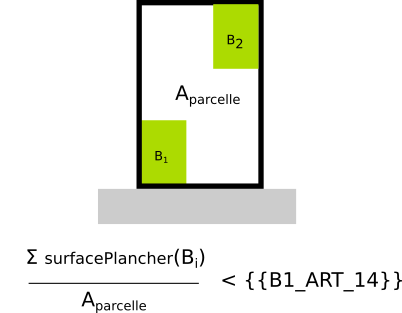

IAUIDF-010 - Coefficient d'occupation du sol
Modèle de phrase
Le Coefficient d'Occupation du Sol doit être inférieur à {{B1_ART_14}}.
Paramètres
B1_ART_14
Désigne le Coefficient d'Occupation du Sol minimal. Il s'agit du rapport entre la surface de plancher bâti et l'air de la parcelle. La surface de plancher représente la surface de tous les planchers de tous les étages d'un bâtiment. Valeur positive pouvant être supérieure à 1.
Explications

Implémentation
La vérification du ratio s'effectue dans la classe PredicateIAUIDF. Seule la valeur de la première bande est prise en compte.
L'image suivante illustre avec deux boîtes comment SimPLU3D calcule la surface de plancher en considérant les différentes composantes issues des intersections entre boîtes.

Note : Dans le cadre des travaux avec l'IAU-IDF, cet article a été désactivé car rendu caduque par la loi ALLUR.